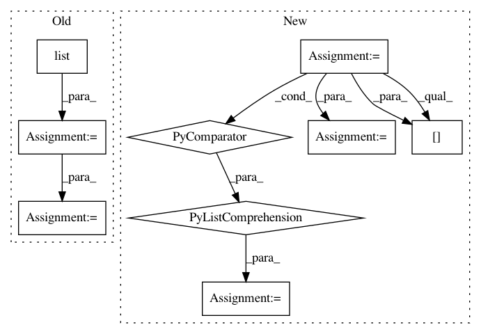

2a1a6851344172e0134f3c5f4f5c1021975f2812,torchnlp/samplers/bucket_batch_sampler.py,BucketBatchSampler,__iter__,#BucketBatchSampler#,37
Before Change
batch_size, drop_last)
def __iter__(self):
batches = list(super().__iter__())
if self.last_batch_first:
last_batch = batches.pop()
if self.shuffle:
random.shuffle(batches)
if self.last_batch_first:
batches.insert(0, last_batch)
After Change
if not self.biggest_batches_first:
return get_batches()
else:
batches = list(get_batches())
indices = heapq.nlargest(
5,
range(len(batches)),
key=lambda i: len(pickle.dumps([self.data[j] for j in batches[i]])))
front = [batches[i] for i in indices]
for i in sorted(indices, reverse=True):
batches.pop(i)
batches[0:0] = front
return iter(batches)
In pattern: SUPERPATTERN
Frequency: 3
Non-data size: 9
Instances
Project Name: PetrochukM/PyTorch-NLP
Commit Name: 2a1a6851344172e0134f3c5f4f5c1021975f2812
Time: 2018-03-11
Author: petrochukm@gmail.com
File Name: torchnlp/samplers/bucket_batch_sampler.py
Class Name: BucketBatchSampler
Method Name: __iter__
Project Name: thoughtworksarts/EmoPy
Commit Name: bd1fa163ba2e3a02da40151c9ab5e498878800e9
Time: 2017-12-19
Author: angelica.perez37@gmail.com
File Name: riot_neuralnet/data.py
Class Name:
Method Name: get_raw_training_labels
Project Name: dask/dask-image
Commit Name: cbbcea8795e8da754a5b3ffb1a08ef66afd84eef
Time: 2018-09-02
Author: jakirkham@gmail.com
File Name: dask_image/ndmeasure/_utils.py
Class Name:
Method Name: _ravel_shape_indices